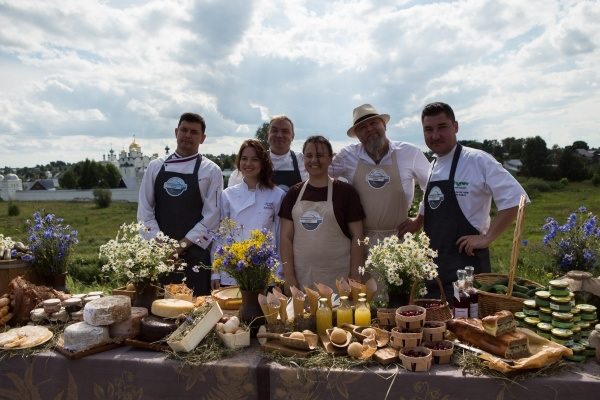

Фестиваль во
Владимирской области
Первая летняя экспедиция проекта «гастрономическая карта россии» стартовала во владимирской области.
Вице-губернатор Владимирской области Михаил Колков, курирующий сферу туризма и реализацию проекта «Гастрономическая карта России» в регионе, подробно рассказал обо всех блюдах, которые приобрели популярность среди гостей региона на маршруте Золотого кольца, в том числе иностранных гостей.
Вице-губернатор Владимирской области Михаил Колков, курирующий сферу туризма и реализацию проекта «Гастрономическая карта России» в регионе, подробно рассказал обо всех блюдах, которые приобрели популярность среди гостей региона на маршруте Золотого кольца, в том числе иностранных гостей.
